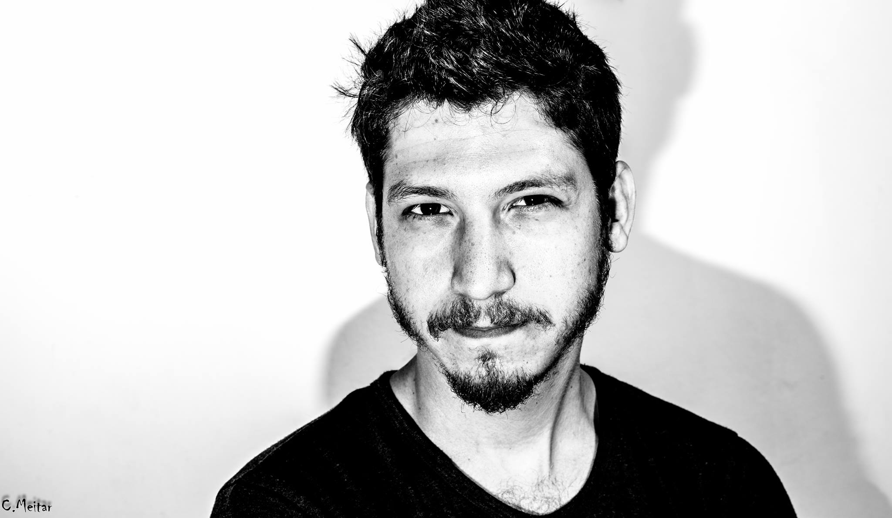

My Resume
Igal Gootin
Head of Digital
Personal information and contact details:

Summary
I am a creative digital marketing and business development professional
with extensive experience leading digital initiatives, including Bar-Ilan University's
marketing strategy, where I drove significant student growth. My background includes
managing multi-brand digital marketing at companies like Lubinski Group and Adler Chomski,
where I led cross-functional projects, optimized campaigns through data-driven strategies,
and managed sizable budgets. With strong skills in analytics, CRM, and marketing automation,
and a BA in Public Communications and Political Science.
I am fluent in Hebrew and English and focused on impactful, growth-oriented digital solutions.
Education
Bachelor's Degree (B.A.) in Public Communications and Political Science
Bar-Ilan University, 2013
Advanced Strategic and Client Management Studies
"Habetzefer" (The School of Advertising), 2014
Digital Transformation Leaders Program
BDO, 2021
Work Experience
Digital Marketing and Business Development Manager | Bar-Ilan University | 2020-Present
- Led the university's digital marketing strategy, achieving a double-digit increase in student registrations annually.
- Managed all digital assets, including websites, social media, and CRM, and supervised internal and external digital stakeholders, including agencies, developers, and analysts.
- Drove brand engagement through data-driven marketing campaigns, setting and meeting performance goals, enhancing lead generation, and optimizing customer journeys from prospect to student.
- Spearheaded projects to implement innovative digital technologies across platforms, including landing pages, CRO dashboards, and automated marketing solutions, to improve user experience and engagement.
Head of Digital | Lubinski Group | 2018-2019
- Oversaw all digital activities for five automotive brands, managing a budget of over 20 million NIS.
- Led the development and execution of data-driven marketing campaigns, collaborating with external agencies and overseeing digital supplier partnerships.
- Directed digital transformation projects to improve customer journey tracking, analytics, and measurement, enhancing campaign performance across channels.
Head of Marketing Technologies and Data | Adler Chonsky Group | 2013-2018
- Managed the implementation of marketing technologies and data analytics solutions for large clients, including CRM systems, dashboards, and advanced analytics platforms.
- Established and maintained key partnerships in data exchange, expanding audience reach and optimizing client campaigns.
- Led a team of digital marketing professionals, including data analysts, developers, and campaign managers, to deliver high-impact results for clients.
Skills
- Skills: Digital Marketing, Business Development, CRM Management, Data Analysis, Campaign Optimization, Project Management, Advanced Analytics (Datorama, Looker), CMS, Social Media Strategy, Marketing Automation, UX/UI Optimization
- Languages: Hebrew (Native), English (Fluent)
- Certifications and Courses:
- Digital Transformation Leaders Program, BDO, 2021
- Advanced Strategy and Client Management, "Habetzefer", 2014
- Management Development Course, 2016